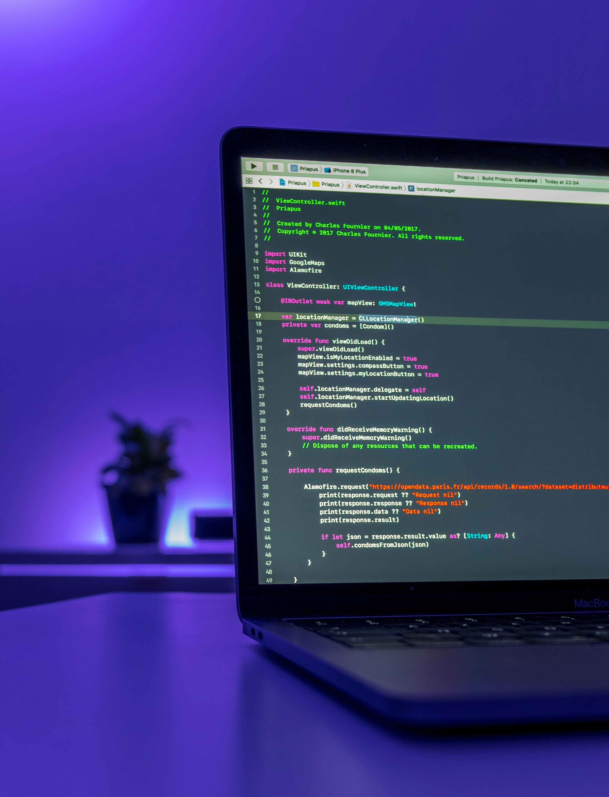
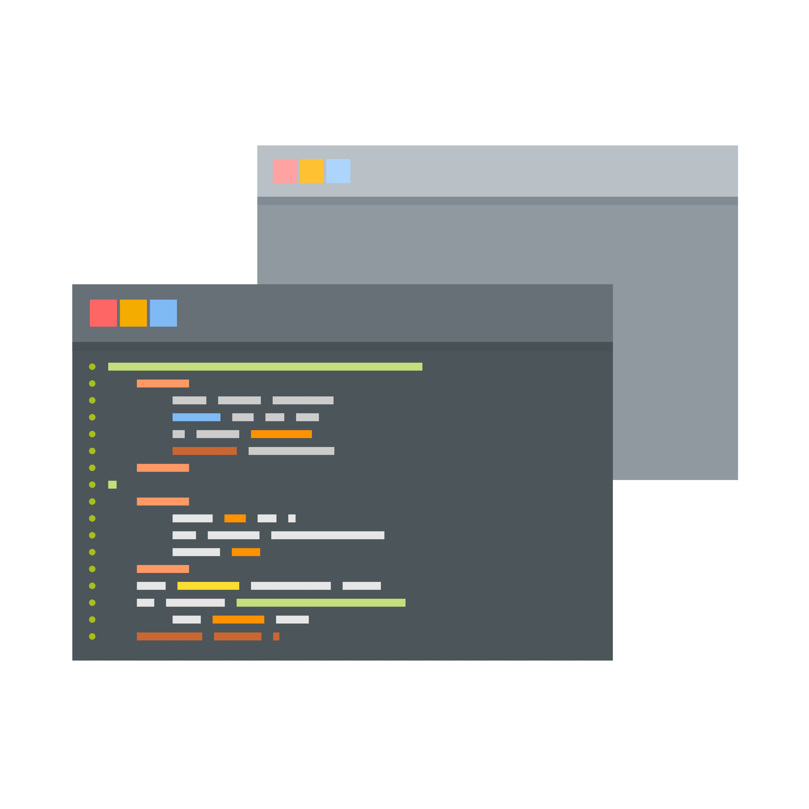

Programação
Aprenda os fundamentos da programação e descubra como criar seus primeiros projetos.
Tecnologia que abre caminhos.
Conectando jovens das periferias ao conhecimento e às oportunidades profissionais.
Conhecimento, oportunidades e caminhos reais para construir seu futuro na tecnologia.
Quero participar
O TechJovem é voltado principalmente para jovens das periferias que desejam conhecer o universo da tecnologia.
Nosso objetivo é ampliar o acesso ao conhecimento, incentivar a formação profissional e apresentar caminhos para o mercado de trabalho.
Conheça o universo da tecnologia e suas possibilidades.

Aprenda os fundamentos da programação e descubra como criar seus primeiros projetos.
O conhecimento transforma vidas e cria oportunidades. Nosso objetivo é facilitar o acesso à educação tecnológica.
Conheça plataformas e instituições que oferecem cursos gratuitos de tecnologia.
Explore apostilas, vídeos e exercícios para desenvolver suas habilidades.
Para começar a aprender tecnologia, você pode utilizar:
Descubra caminhos para conquistar sua primeira oportunidade no mercado de tecnologia.
Aprenda como procurar vagas de estágio, jovem aprendiz e oportunidades para iniciantes.
Entenda como apresentar seus projetos e demonstrar suas habilidades profissionais.
Nossa oficina apresenta conteúdos introdutórios para jovens que desejam começar na tecnologia.
Introdução à tecnologia, suas aplicações e oportunidades profissionais.
Apresentação do HTML, CSS e JavaScript e suas funções no desenvolvimento web.
Desenvolvimento de uma página web utilizando os conhecimentos adquiridos.
Quer saber mais sobre o projeto TechJovem? Entre em contato com nossa equipe.
E-mail: contato@techjovem.example
Formulário demonstrativo para inscrição nas atividades do projeto. Utilize apenas dados fictícios.